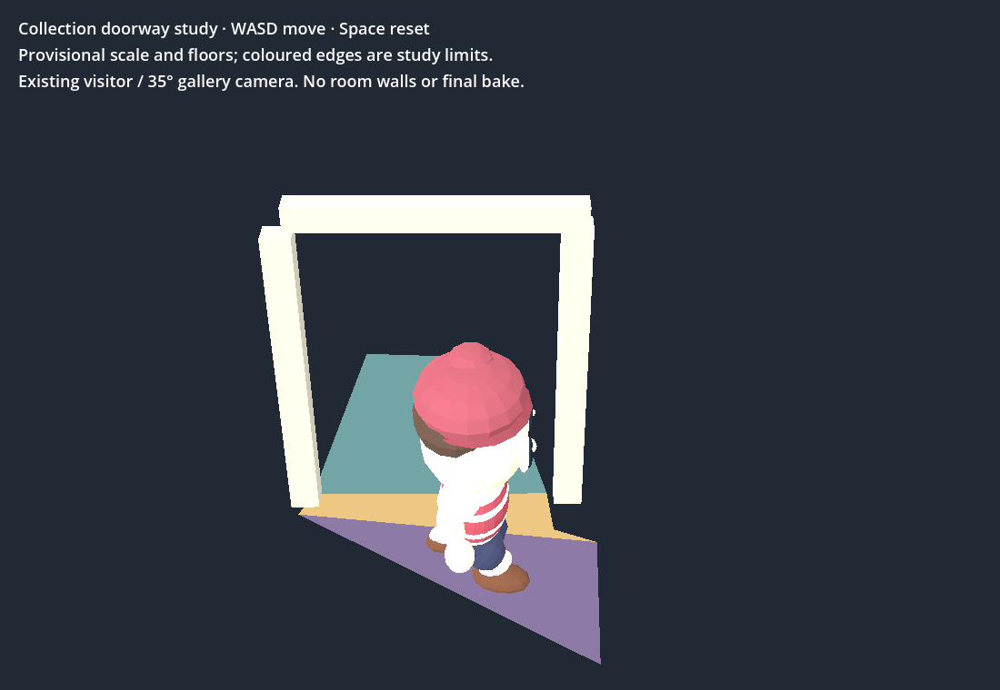
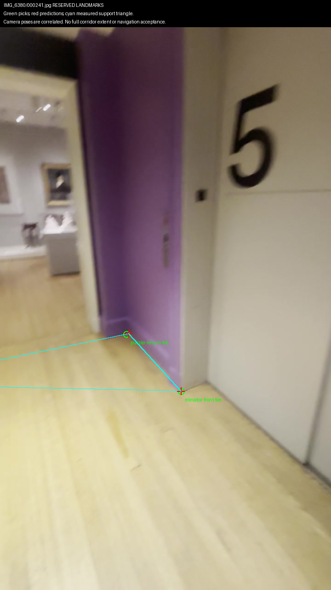

Open the playable trial — WASD to walk, Space to reset
The existing visitor crosses and returns in the browser. The jamb blocks the capsule; obstructing casing visuals cut away while their collision remains. This is a small geometry trial, not two completed rooms. Coloured edges are study limits, not museum walls. Scale and interpolated floor levels remain provisional.

Recovered the interrupted earlier-pass measurement: 16–25° ray separation and 2.58° p95 sensitivity to ±3-pixel picks. A new narrower-baseline comparison was weaker (7.04°); it did not replace this result. One new reserved pick missed by 8.90 pixels. Neither result establishes independent surveyed accuracy.

RTX 4070 SUPER, Chrome 154 at 1100×760: first ready 2.49 seconds; sampled p95 frame interval 16.67 ms; JS heap 67.6 MB (not whole-process memory). Native RTX p95 8.33 ms. These numbers describe this tiny test scene, not the final museum.
Repository checks pass. Shell playtest: eight failures (seven seen before, plus cross-fade sampling this run); no runtime files changed. No paid generation. The 3D Viewer is unchanged.
Next: expand beyond this doorway only where reference-backed floor and wall extents support it; test left/right collision clearance, both camera approaches and narrow browser sizes. Whole rooms, independent scale, sculpture rear coverage and final lighting remain open.
Browser evidence · Geometry and caveats · Source and output hashes